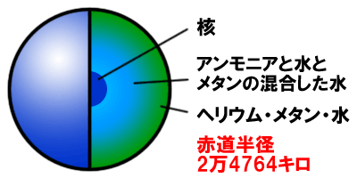
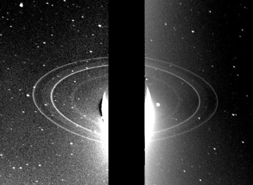

海王星の特徴
海王星の大気は水素80％、ヘリウム19％、メタン2％の成分でできている。ガスでできた木星型惑星なので、大気中は時速2,000kmの強い風や嵐がふいている。
木星や土星にはアンモニアがふくまれ、はでな色をしていますが、天王星や海王星は、水素やヘリウムでできた大気の下に、水がいっぱいある層（そう）があって、アンモニアが水にとけこんでいる。そして、メタンが残り、メタンが赤い色をきゅうしゅうして青く見えるのだ。
天王星も海王星も青い色をしていて、どちらも同じような大きさで小さな惑星ですが、天王星のほうが重くできているる。木星や土星は水素とヘリウムが主成分ですが、天王星と海王星は水が主成分である。
計算で発見された海王星
天王星の発見以降、その軌道が天文力学の計算に合わないのはその外側にさらに惑星があるためだと考えられていた。
そのためいろいろな科学者が未知の惑星の大きさや、軌道、位置を計算していた。イギリスでは天文学者ジョン・クーチ・アダムスが、フランスでは天文学者ユルバン・ルベリエが計算をし、ルベリエの依頼を受けたドイツの天文学者ヨハン・ガレが1846年9月23日、ベルリン天文台での観測で海王星を発見したのだ。ルベリエが計算としたものと発見された位置の誤差は1度。
弧になっている環
海王星にも環があり、惑星探査機「ボイジャー2号」によって発見された。環は4本発見されていますが、どれも非常に細く、何ヵ所か途切れて弧（アーク）になっている部分も。